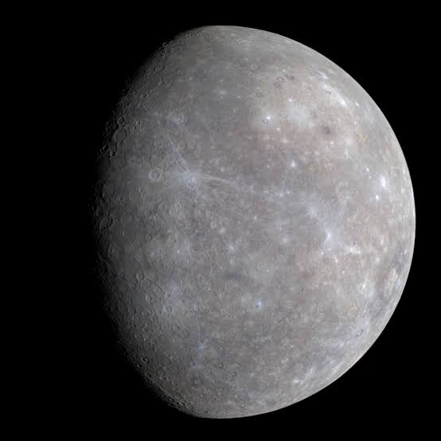
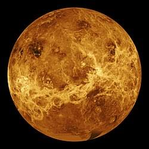
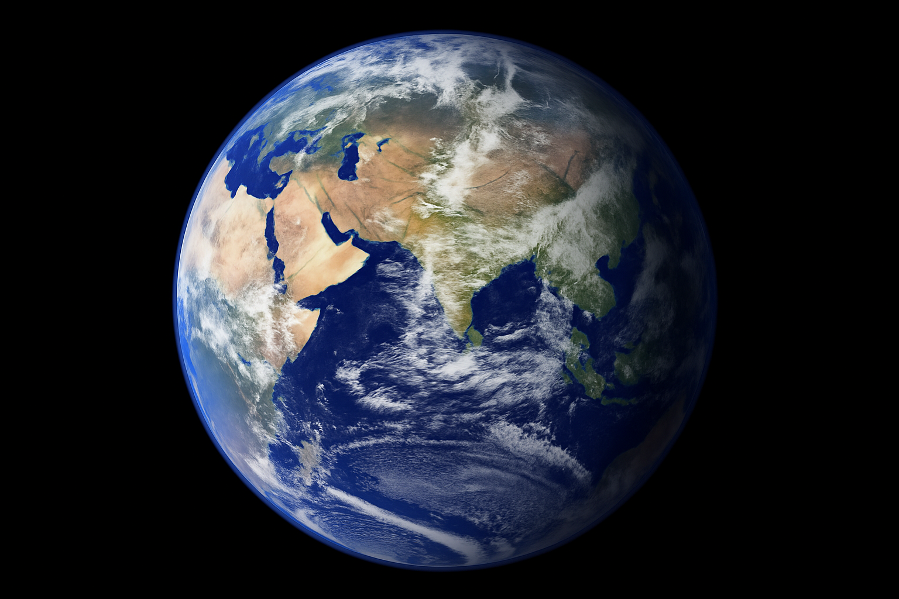
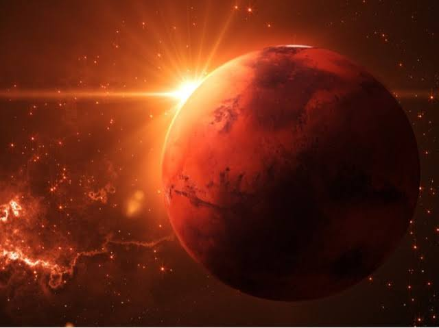
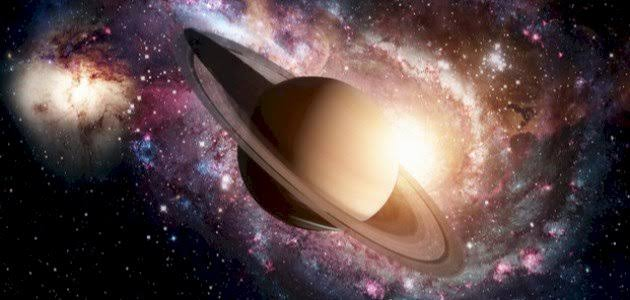
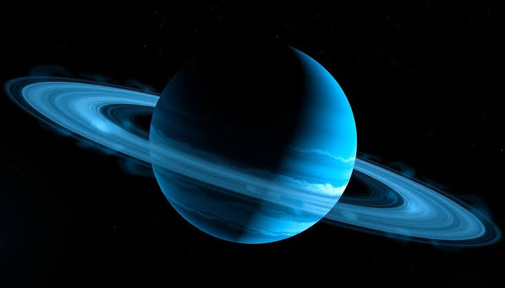
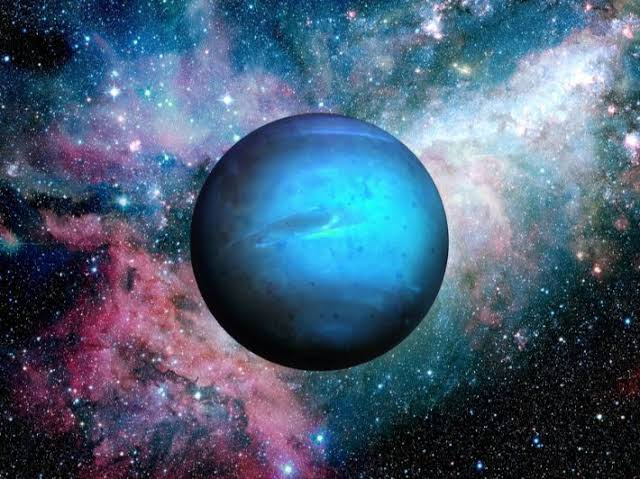
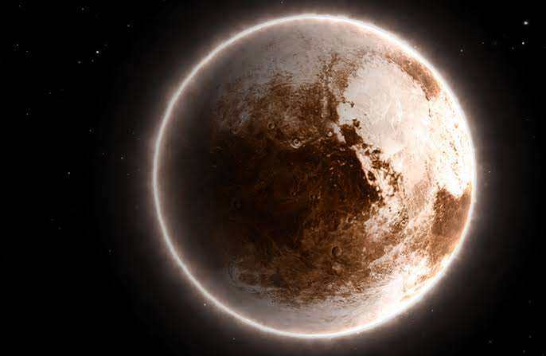

ده أفضل موقع عشان تتعرف على معلومات عن كواكب المجموعة الشمسيه (مجرة درب التبانة) هتلاقي في الموقع ده حاجات كنت تعرفها أو متعرفهاش عن الكواكب وامتمني انك تستمتع
أولًا: كوكب عطارد
جدول توضيحي لمواصفات كوكب عطارد
| اسم الكوكب | المسافة بين الكوكب والشمس | درجة حرارة الكوكب | مدة دورانه حول الشمس | مدة دورانه حول نفسه | عدد الأقمار التي تدور حوله | جاذبية الكوكب |
|---|---|---|---|---|---|---|
| عطارد | حوالي 58 مليون كيلومتر | حوالي 430 درجة مئوية | حوالي 88 يوم | حوالي 59 يومًا أرضيًا | صفر | حوالي 3.7 م\ث² |
معلومات بخصوص الكوكب :
الغلاف الجوي المفقود:
عطارد لا يمتلك غلافًا جويًا تقريبًا ليحبس الحرارة، لذا تتأرجح درجات الحرارة فيه بشكل مرعب؛ فبينما تحترق جهته المواجهة للشمس، تتجمد الجهة الأخرى لتصل إلى -180 درجة مئوية.
القلب الحديدي:
يمتلك عطارد قلبًا حديديًا ضخمًا يشغل حوالي 85% من حجم الكوكب، مما يجعله ثاني أكثر الكواكب كثافة بعد الأرض.
ثانيًا: كوكب الزهرة
جدول توضيحي لمواصفات كوكب الزهرة
| اسم الكوكب | المسافة بين الكوكب والشمس | درجة حرارة الكوكب | مدة دورته حول الشمس | مدة دورانه حول نفسه | عدد الأقمار التي تدور حوله | جاذبية الكوكب |
|---|---|---|---|---|---|---|
| الزهرة | حوالي 108 مليون كيلومتر | حوالي 470° مئوية | حوالي 225 يوم | حوالي 243 يومًا أرضيًا | صفر | حوالي 8.87 م\ث² |
معلومات بخصوص الكوكب :
دوران عكسي:
الزهرة يدور حول نفسه باتجاه معاكس لمعظم الكواكب، مما يعني أن الشمس تشرق فيه من الغرب وتغرب في الشرق!
ضغط ساحق:
الضغط الجوي على سطح الزهرة يعادل 90 ضعف الضغط على الأرض، وهو ما يشبه الضغط الذي ستشعر به إذا كنت على عمق 1000 متر تحت المحيط.
ثالثًا: كوكب الأرض
جدول توضيحي لمواصفات كوكب الأرض
| اسم الكوكب | المسافة بين الكوكب والشمس | درجة حرارة الكوكب | مدة دورته حول الشمس | مدة دورانه حول نفسه | عدد الأقمار التي تدور حوله | جاذبية الكوكب |
|---|---|---|---|---|---|---|
| الأرض | حوالي 149.6 مليون كيلومتر | حوالي 15 درجة مئوية | حوالي 365 يوم | حوالي 24 ساعة | قمر واحد | حوالي 9.807 م\ث² |
معلومات بخصوص الكوكب :
الدرع المغنطيسي:
للأرض مجال مغناطيسي قوي يحمينا من الإشعاعات الشمسية الضارة والرياح الشمسية التي قد تدمر الغلاف الجوي
التدوير:
هي الكوكب الوحيد المعروف الذي يمتلك صفائح تكتونية تتحرك وتعيد تدوير الكربون، مما يساعد في تنظيم درجة حرارة الكوكب على المدى الطويل.
رابعًا: كوكب المريخ
جدول توضيحي لمواصفات كوكب المريخ
| اسم الكوكب | المسافة بين الكوكب والشمس | درجة حرارة الكوكب | مدة دورته حول الشمس | مدة دورانه حول نفسه | عدد الأقمار التي تدور حوله | جاذبية الكوكب |
|---|---|---|---|---|---|---|
| المريخ | 6,779 كم | حوالي 63 درجة مئوية | حوالي 687 يومًا أرضيًا | حوالي 24 ساعة و37 دقيقة | قمران | حوالي 3.73 م\ث² |
معلومات بخصوص الكوكب :
براكين عملاقة:
يضم المريخ جبل "أوليمبوس"، وهو بركان درعي عملاق يبلغ ارتفاعه 25 كيلومترًا، مما يجعله أطول من جبل إيفرست بـ 3 مرات
مياه مدفونة:
اكتشف العلماء أدلة قوية على وجود مياه متجمدة تحت سطح المريخ وفي أقطابه، مما يزيد من احتمالية وجود حياة مجهرية قديمة.
خامسًا: كوكب المشتري

جدول توضيحي لمواصفات كوكب المشتري
| اسم الكوكب | المسافة بين الكوكب والشمس | درجة حرارة الكوكب | مدة دورته حول الشمس | مدة دورانه حول نفسه | عدد الأقمار التي تدور حوله | جاذبية الكوكب |
|---|---|---|---|---|---|---|
| المشتري | حوالي 778 مليون كيلومتر | حوالي -110 درجة مئوية | حوالي 12 سنة أرضية | أقل من 10 ساعات | حوالي 95 قمرًا | حوالي 24.79 م\ث² |
معلومات بخصوص الكوكب :
ملك الاقمار:
يمتلك المشتري مجالًا مغناطيسيًا هو الأقوى بين الكواكب، ولديه 95 قمرًا معروفًا، من بينها "أوروبا" الذي يعتقد العلماء بوجود محيط سائل تحت قشرته الجليدية
فشل نجمي:
المشتري يتكون من الهيدروجين والهيليوم مثل النجوم، ولو كان حجمه أكبر بـ 80 مرة، لربما أصبح نجمًا بدلاً من كوكب
سادسًا: كوكب زحل
جدول توضيحي لمواصفات كوكب زحل
| اسم الكوكب | المسافة بين الكوكب والشمس | درجة حرارة الكوكب | مدة دورانه حول الشمس | مدة دورانه حول نفسه | عدد الأقمار التي تدور حوله | جاذبية الكوكب |
|---|---|---|---|---|---|---|
| زحل | حوالي 1.43 مليار كيلومتر | حوالي -178 درجة مئوية | حوالي 29.5 سنة أرضية | حوالي 10 ساعات و33 دقيقة | حوالي 274 قمرًا | حوالي 10.44 م\ث² |
معلومات بخصوص الكوكب :
حلقات مذهلة:
تتكون حلقاته من بلايين القطع الصغيرة من الجليد والغبار والصخور، وتتمتع بلمعان عالٍ لأن الجليد يعكس ضوء الشمس بكفاءة
عواصف سداسية:
توجد عاصفة غريبة ودائمة على شكل مسدس سداسي الأضلاع في قطبه الشمالي، ولا يزال العلماء يدرسون سر تشكل هذا الشكل الهندسي. 💠
سابعًا: كوكب أورانوس
جدول توضيحي لمواصفات كوكب أورانوس
| اسم الكوكب | المسافة بين الكوكب والشمس | درجة حرارة الكوكب | مدة دورانه حول الشمس | مدة دورانه حول نفسه | عدد الأقمار التي تدور حوله | جاذبية الكوكب |
|---|---|---|---|---|---|---|
| أورانوس | حوالي 2.9 مليار كيلومتر | حوالي -224.2 | حوالي 84 عامًا أرضيًا | حوالي 17 ساعة و 14 دقيقة و 52 ثانية | حوالي 28 قمراً | حوالي 8.69 م\ث² |
معلومات بخصوص الكوكب :
كوكب مائل:
يميل محور دوران أورانوس بزاوية 98 درجة، مما يجعله يبدو وكأنه يتدحرج على مداراه.
امطار الماس:
يعتقد العلماء أن الضغط الهائل في أعماق أورانوس ونبتون قد يحول الكربون إلى ألماس يتساقط كالأمطار.
ثامنًا: كوكب نبتون
جدول توضيحي لمواصفات كوكب نبتون
| اسم الكوكب | المسافة بين الكوكب والشمس | درجة حرارة الكوكب | مدة دورانه حول الشمس | مدة دورانه حول نفسه | عدد الأقمار التي تدور حوله | جاذبية الكوكب |
|---|---|---|---|---|---|---|
| نبتون | حوالي 4.5 مليار كيلومتر | حوالي -218 درجة مؤية | حوالي 165 عامًا أرضيًا | حوالي 16 ساعة | حوالي 16 قمرًا | 11.15 م\ث² |
معلومات بخصوص الكوكب :
الرياح الاسرع:
نبتون هو كوكب العواصف، حيث تتجاوز سرعة الرياح فيه 2100 كم/ساعة.
بعد سحيق:
هو الكوكب الوحيد الذي تم اكتشافه بالحسابات الرياضية قبل أن يتم رصده بالتلسكوب.
تاسعًا: بلوتو
جدول توضيحي لمواصفات بلوتو
| اسم الكوكب | المسافة بين الكوكب والشمس | درجة حرارة الكوكب | مدت دورانه حول الشمس | مدت دورانه حول نفسه | عدد الاقمار التي تدور حوله | جاذبية الكوكب |
|---|---|---|---|---|---|---|
| بلوتو | حوالي 5.9 مليار كيلومتر | حوالي -232 مؤية | حوالي 248 سنة أرضية | حوالي 6 أيام و9 ساعات و36 دقيقة | حوالي 5 اقمار | 0.62 م\ث² |
معلومات بخصوص الكوكب :
مدار بيضاوي:
مدار بلوتو بيضاوي لدرجة أنه يقترب من الشمس أكثر من نبتون أحياناً!
قلب من جليد:
يتميز بلوتو بوجود منطقة واسعة على شكل "قلب".
وصلت مركبتنا العلمية إلى محطتها الأخيرة نرجو أن تكونوا قد استمتعتم بالتعرف على جيراننا في الفضاء من عطارد الصغير إلى بلوتو البعيد. لا تنسوا مشاركتنا رأيكم في استطلاع الرأي بالأسفل، وإلى اللقاء في رحلة استكشافية جديدة!
أسئلة سريعة
(مجرد استطلاع رأي)